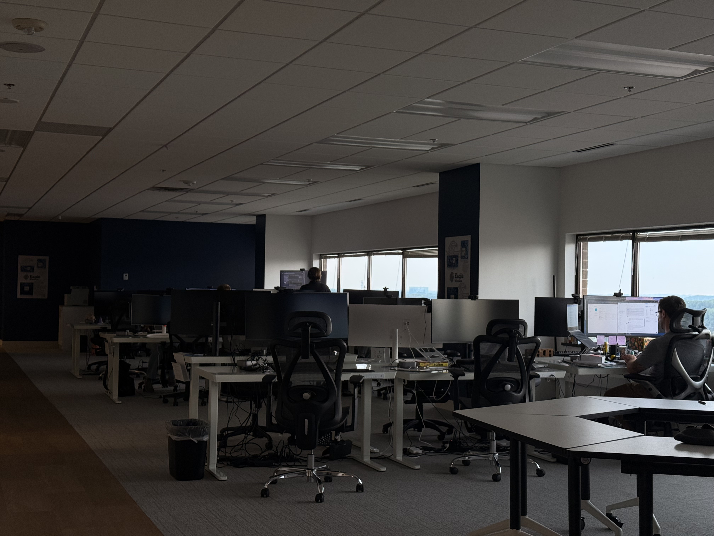

Full-Stack Development
I build web apps and REST APIs with Python, Flask, FastAPI, and SQL, and deploy them with Docker, Podman, and Nginx.
I study Computer Science, Data Science, and Mathematics at the University of Wisconsin-Madison, and I love turning slow, manual processes into simple tools.
I build web apps and REST APIs with Python, Flask, FastAPI, and SQL, and deploy them with Docker, Podman, and Nginx.
I use Pandas, Scikit-learn, and PyTorch to clean data, train models, and turn results into clear recommendations.
As President of Women in Computing (ACM-W) at UW-Madison, I lead a 20+ member board that organized 35+ events last year.
Software Engineer Intern at Eagle Wireless, Summer 2026

During my Summer 2026 software engineering internship at Eagle Wireless, I built internal web applications that replaced manual production workflows. I handled every layer, from database design and APIs to testing and deployment.
I compared SVD and KNN collaborative-filtering models on a Kaggle dataset, tuned them with GridSearchCV to reach a 0.64 RMSE, and built a pipeline that suggests a top-five product list for each user.
Tools: Python, Scikit-learn
I designed a layered Java backend for sign-in, shopping carts, and orders, using DAO and service patterns to keep database code separate from application logic.
Tools: Java, JDBC, MySQL
I'm open to software engineering and data internship opportunities. I'd love to hear from you.
Email Riya about opportunities